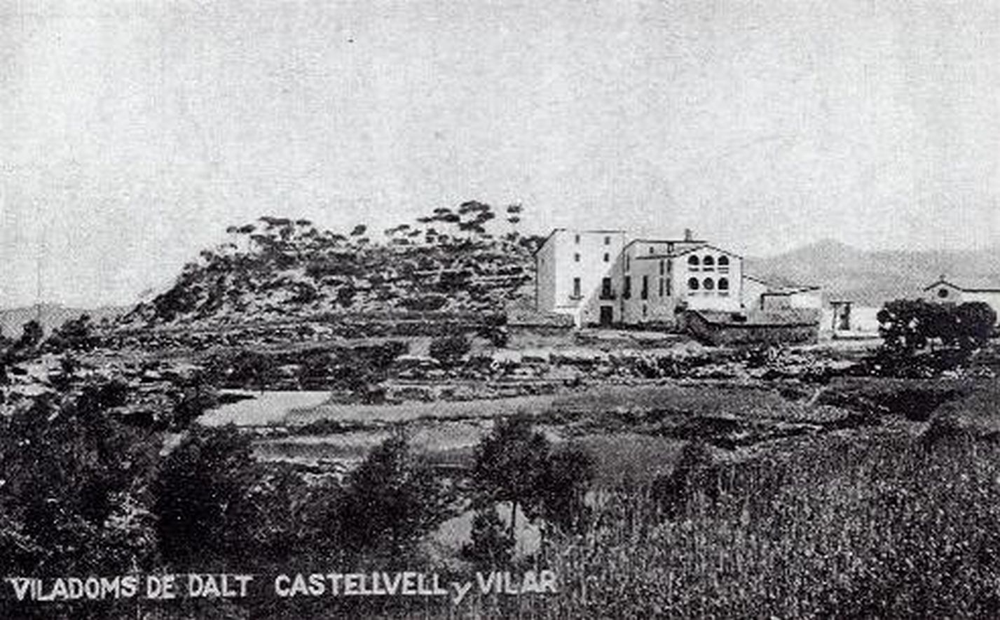
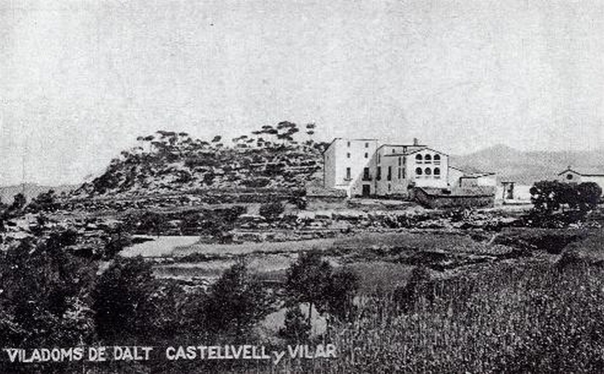

El nom original del mas era mas Llevàllol sobirà, que fa constància en un capbreu de 1328. Fou a partir de 1652, que el nou propietari, Pere Viladoms, propiciar el nom que avui dóna raó al mas. Des de llavors esdevingué, mas Viladoms. Avui dia es troba en un estat desolador, abandonat i ruïnós. Forma part d'aquest grup de construccions amb molta història, vida i servei a sobre, però a sobre amb les injustes pedres de la mala sort de la mà.Ha patit diferents espolis, especialment els darrers anys.
L'actual masia de Viladoms de dalt (Castellbell i el Vilar) és un edifici amb orígens medievals, que remonten al s. XIV. Habitat en diferents moments de la història i reconvertit, en cada moment, per donar servei als seus variats habitants. En aquest document del s. XIV es citen dos masos Llevàllol: el Jussà i el Sobirà. Per la situació elevada d'aquest mas, donem per assentat que parlem del sobirà. De l'altre mas, que fa constar en aquest capbreu, no hi ha recerca documentada de la seva situació. Podem pensar en el mas de Viladoms de baix com a possible Llevàllol Jussà, que la família Viladoms va comprar a mitjans del s. XVII.
L'actual masia de Viladoms de Dalt (Castellbell i el Vilar) és un edifici amb orígens medievals, que es remunten al s. XIV. Habitat en diferents moments de la història i reconvertit, en cada moment, per donar servei als seus variats habitants. Avui dia es troba en un estat desolador, abandonat i ruïnós. Forma part d'aquest grup de construccions amb molta història, vida i servei a sobre, però amb les injustes pedres de la mala sort de la mà. Ha patit diferents espolis, especialment els darrers anys, i la situació de desprotecció del mas, per part dels diferents estaments de govern fa, si més no, potenciar aquesta realitat sense fi.
L'actual masia de Viladoms de Dalt (Castellbell i el Vilar) és un edifici amb orígens medievals, que es remunten al s. XIV. Habitat en diferents moments de la història i reconvertit, en cada moment, per donar servei als seus variats habitants. Avui dia es troba en un estat desolador, abandonat i ruïnós. Forma part d'aquest grup de construccions amb molta història, vida i servei a sobre, però amb les injustes pedres de la mala sort de la mà. Ha patit diferents espolis, especialment els darrers anys, i la situació de desprotecció del mas, per part dels diferents estaments de govern fa, si més no, potenciar aquesta realitat sense fi.